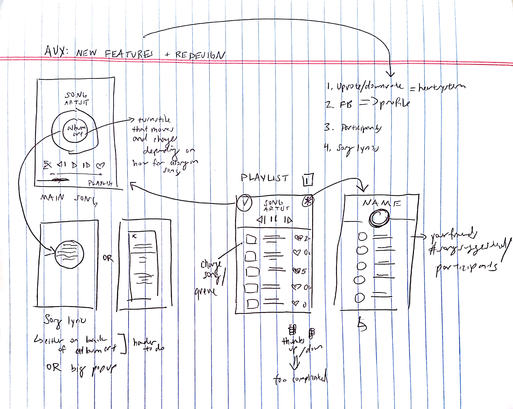
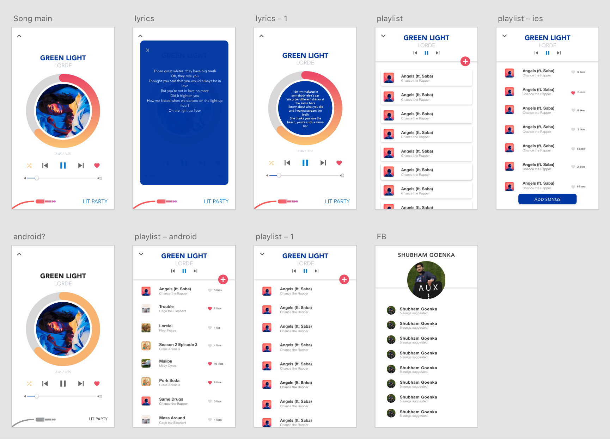

Mobile, UI/UX Design
October 2017
UX Designer at Mobile
Developers of Berkeley
Aux is a mobile app that revolutionizes how users share music by making it easy to create live collaborative playlists. It allows one to make public or private playlists where others can easily add music, creating connections and bringing users together.
Created by app developers in Mobile Developers of Berkeley, I worked with the team to integrate key new features into the app while revamping the UI.
Based on Aux's new logo, I decided to change the UI to have a primarily white background as an indication of something new. The first place to start was coming up with ideas for how to make the song display different and interesting. This screen is the most used screen in the app and how Aux will stand out amongst its competitors. Going through each of the features while also updating the current screens is how I approached this redesign.
My first step was coming up with the main song page and creating a lowfi design. I decided to go with a clean circular object for the album art with a ring around it demonstrating the time left remaining in the song. My idea was to use a color grabber to take the primary colors in the album art and use those for the pause, shuffle and like buttons to add a pop of color on the white background.
The next step was to address each of the features. I experimented with displaying the lyrics in two ways. One idea was to put the words on the back of the album art. However, this would require that the lyrics be constantly updated and synced to the song as the circle wouldn't be able to fit all the lyrics at once. An alternative would be to have a single pop up when tapping on the album art that showed all the lyrics at one time. This would be easier to implement.
Instead of using an upvote/downvote system, I decided it was more positive and encouraging to have only a like system. I put hearts on each song for the user to like as well as a display on the playlist page showing how many people had liked it. In this way, the user can see the most popular songs on a playlist and contribute.
The use of likes goes hand in hand with Facebook and user participation by having a page showing user profile. This page would also show your friends and the number of songs they have suggested. In further designs, I hope to elevate this idea by incorporating the number of songs liked per person, as well as song liked/suggested per person per playlist. After completing the lowfi design, I created a hifi design to show the solution in application.
At the end, I really like how this design turned out. I think a big takeaway was that previously I worked mainly with Android design and this was the first time that I did iOS design as well because Aux is cross platform. You can really tell the difference in terms of where buttons are placed (floating action button vs. an rectangular button) and having to keep in mind that Android does have a back button while iOS does not.
I also looked at UX in terms of Nielsen Norman's 10 usability heuristics. It's important to show the user the system status so that they know what is going on. For Aux, that means having the rim around the album cover that shows how far along one is in a song. Another aspect was having an aesthetic and minimalist design which was definitely achieved with the white background and pops of color from the album art.
Taking these rules into consideration definitely helped clarify my UI and UX to create a functional and minimalist design.